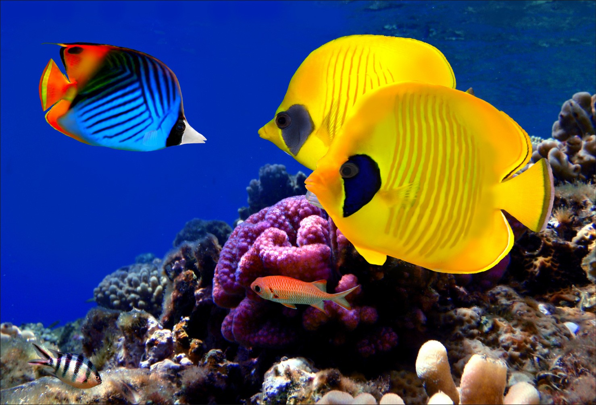

Quem tem um aquário em casa ou no local de trabalho já deve ter usufruído dos principais benefícios do aquarismo. Mais do que um hobby, é uma paixão que move milhões de pessoas ao redor do mundo.
Quando bem cuidado e planejado, o ambiente de um aquário se incorpora ao ambiente do seu imóvel, criando um espaço único, estiloso e cheio de vida.
Mas ter um aquário vai muito além de composição de ambientes internos e externos. Listamos abaixo os principais benefícios do aquarismo para a nossa vida. Vamos a eles?